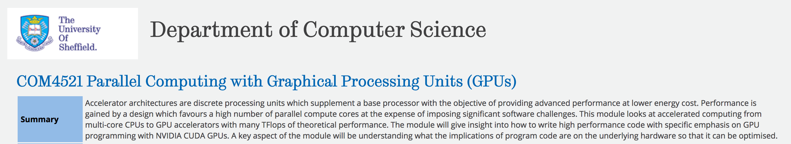
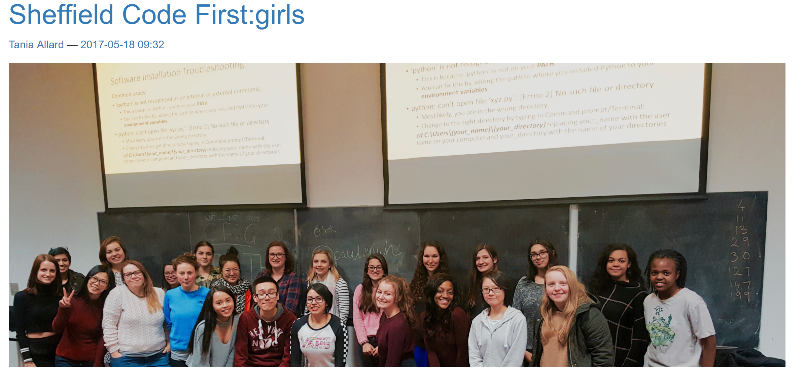

I, Research Software Engineer
Mike Croucher
Co-Founder of Sheffield RSE group http://rse.shef.ac.uk/
Twitter: @walkingrandomly
Neil Lawrence
"How would you like to ditch your commute,
and change the world?"

Sheffield RSE - March 2015

Me!
Remit
Enhance The University of Sheffield's capacity to produce high quality, efficient and sustainable research software
....for the entirely of human knowledge
....in all relevant languages and technologies
Sheffield RSE - Now

Sheffield RSE - Co-founders

My 'plan'
- Help academics with software
- ??????
- ??????
- Profit!!!
My 'plan'
- Help academics with software
- ??????
- ??????
- ??????
Culture and values
Support

Degree modules

Supporting lecturers
Sheffield RSE - Support
92% of academics use research software
We help them use and develop it better
For teaching and research
We have a problem!

Courage
John Mcindoe

The talk
RSE problems
- No career pathway
- Not recognised by HR as a thing
- Not many RSE groups
- Lack of recognition for software itself
Accept it
This is how things are.

Community
Community - Local
- IT department
- The library
- Departmental RSEs
- Grassroots
Community - National
- UK RSE
- Tier-2 HPC centres
- Software Sustainability Institutey
- Archer Champions
- RSE-Leaders
Community - International
- Software Carpentry
- Nasa Datanauts
- Mozilla OpenScience
- OpenDreamKit
Diversity
Diversity - people
Diversity - people

Diversity - people

Diversity - technology
Diversity - projects
HPC in Urban Studies courses